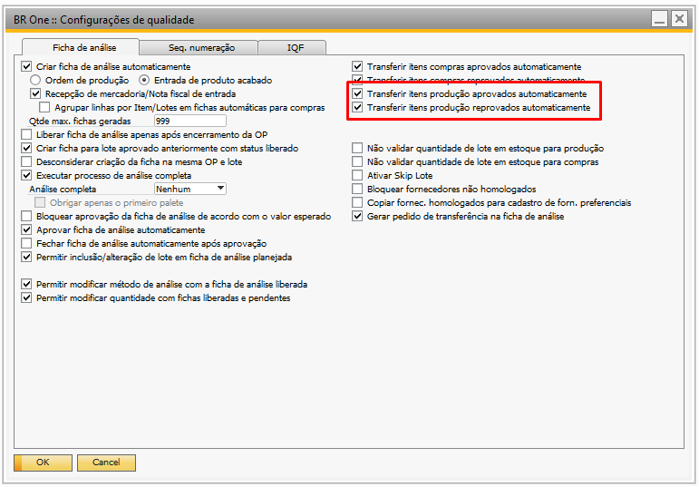

Versão 4.11.333
Nota
Melhorias
Melhoria módulo qualidade no SAP
Na atualização mais recente do BR One versão 333, foi implementada, no módulo de qualidade integrado ao módulo de produção nativo do SAP, uma melhoria que permite ao usuário transferir automaticamente itens de produção aprovados ou reprovados diretamente a partir da ficha de análise.
Nota
Correções
Erro ao gerar transferência para item administrado por série na ficha de análise com origem “Entrada de Produto Acabado”
Na atualização mais recente do BR One versão 333, foi realizado um ajuste para corrigir um erro que ocorria ao gerar transferências para itens administrados por série na ficha de análise com origem “Entrada de Produto Acabado”.
Ficha de análise com especificações diferentes do modelo de análise
Na atualização mais recente do BR One versão 333, foi corrigido um problema relacionado à criação de fichas de análise, onde a ordem das especificações trazidas para a ficha estava diferente do modelo de análise. A partir dessa versão, as fichas de análise geradas seguirão a ordenação das especificações conforme o cadastro no modelo de análise.